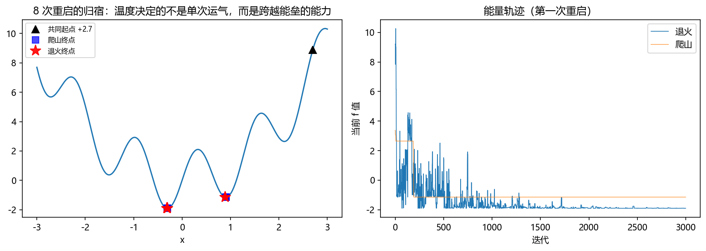
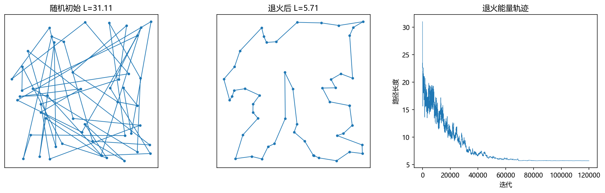
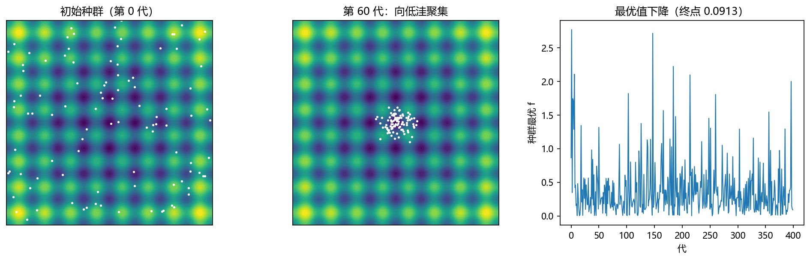
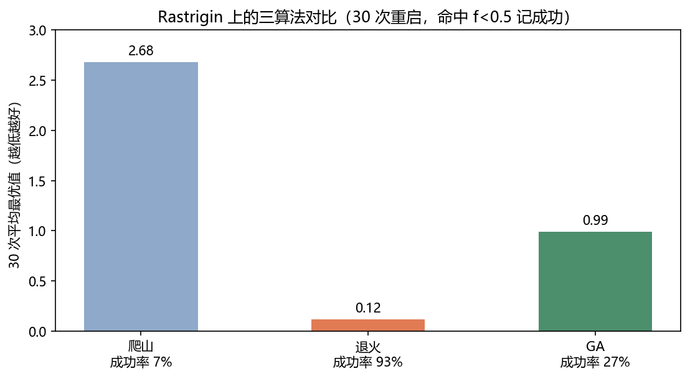

第 8 章 不落俗套：蒙特卡罗优化方法#
本章解决：把模拟从"测量仪"升级为"优化引擎"——目标函数黑箱、带噪声、组合爆炸时，确定性方法束手，随机搜索登场：模拟退火（8.2）、TSP 与 2-opt 邻域（8.3）、遗传算法（8.4）、三算法同台竞技（8.5）。 承上启下：8.2 的接受概率就是 6.3 节 Metropolis 规则换了个马甲——平稳分布从 \(\pi\) 变成 \(e^{-E/T}\)；"能量"语言一路沿用自 Ising 模型；本章的"随机走 + 择优留劣"正是下一章随机游走的思想前奏。
| 关键词 | 事实 |
|---|---|
| 爬山法 | 只接受变好：\(T=0\) 的退火，必然陷局部极小 |
| 模拟退火 | 以 \(e^{-\Delta E/T}\) 接受变坏；\(T\) 递减 → 分布集中到最小值 |
| 2-opt | 反转一段路径；\(\Delta L\) 只看 4 条边，\(O(1)\) 评估 |
| 遗传算法 | 选择 + 交叉 + 变异；种群并行搜索，多样性抗陷坑 |
本章代码：nb/ch08.ipynb（NumPy 实跑，种子 2031）。
8.1 为什么优化要用随机#
求最小值的确定性套路——梯度下降、牛顿法——有三个天然软肋：目标函数不可导（组合问题：路径长度、排班表）、黑箱带噪声（目标值是一次模拟的输出，第 7 章的 \(W_q\) 就是），以及局部极小遍地。局部搜索（爬山法：随机扰动，只接受变好）处理前两者没问题，却天然卡死在局部极小——每一步都"理性"，合起来目光短浅。
蒙特卡罗的解法带着物理学的心机：别求最小值，去按玻尔兹曼分布采样。第 6 章 Metropolis 链的平稳分布是
温度 \(T\) 很高时分布平摊各处，\(T\to 0\) 时分布指数级集中到 \(E\) 的最小值。于是"求全局最优"被改写成"降温采样"——这正是模拟退火。
8.2 模拟退火#
算法：当前解 \(x\)，随机扰动得 \(x'\)，\(\Delta E=E(x')-E(x)\)：
\(T_k\) 按冷却调度递减。理论保证（Geman & Geman）：对数冷却 \(T_k\ge c/\ln(1+k)\) 足够慢时，退火以概率 1 找到全局最优——但慢到没有实用价值；实战用几何冷却 \(T_k=T_0\,r^{k}\)（\(r\approx0.999\)），拿理论换速度。
爬山法 = \(T\equiv0\) 的退火：变坏概率 \(e^{-\Delta E/0}=0\)，一步都不肯退。温度的价值就在"肯退一步"：高温翻山越岭，低温精修定居。
实验（1D 多极小）：\(f(x)=x^2+2\sin 5x\)，全局最优在 \(x\approx-0.3\)。8 次重启、同一起点 \(x_0=+2.7\)（右侧盆地比全局浅但隔着力垒）：退火 6/8 命中全局（75%），纯爬山 4/8（50%）——差距不算悬殊，因为 1D 地形太简单；真正拉开差距的见 8.5：

8.3 TSP 与 2-opt 邻域#
旅行商问题（TSP）：\(n\) 个城市找一条最短回路。朴素随机扰动（交换两城）在长路径上牵一发动全身；2-opt 反转更好——随机选一段子路径整体反转：
\(\Delta L\) 只涉及 4 条边（推导）：反转前后只有与外界衔接的两条边 \(a\!\to\!b,\ c\!\to\!d\) 变成了 \(a\!\to\!c,\ b\!\to\!d\)，段内边原样保留（只是方向反了），所以
评估一步 \(O(1)\)——这是退火能在 12 万步内跑完 50 城的关键（算全部路径长是 \(O(n)\)，差 50 倍）。
实验：50 个随机城市。2-opt + 几何退火（\(T:0.30\to0.002\)，12 万步）：

8.4 遗传算法#
退火是"一个解在走"，遗传算法（GA）是"一群解在演化"——种群并行是它对抗局部极小的第二件武器：
- 选择：按适应度（\(-f\)） tournaments——二人比武胜者出线；
- 交叉：两个父代杂交（实数编码用算术平均）产生子代；
- 变异：子代加高斯扰动——种群的探索发动机。
实验（Rastrigin 函数）：\(f=20+x^2-10\cos 2\pi x+y^2-10\cos 2\pi y\)，全平面布满规律排列的局部极小、全局最优在原点——专门为难局部搜索的测试题。100 个体、400 代：

拓展
GA 的理论基石是 Holland 的模式定理：短、低阶、高于平均适应度的"模式"（基因片段）在选择下按指数速度扩散——交叉变异是双刃剑，既传播好模式也维持多样性。实用主义者记住结论即可：多样性是 GA 的命根，变异率太小种群早熟收敛，太大退化成随机搜索。
8.5 三算法同台#
同一张 Rastrigin，各跑 30 次（命中 \(f<0.5\) 记成功）：
| 算法 | 30 次平均最优值 | 成功率 |
|---|---|---|
| 纯爬山 | 2.68 | 7% |
| 模拟退火 | 0.12 | 93% |
| 遗传算法 | 0.99 | 27% |

怎么理解这份成绩单：爬山输在永不回头；退火赢在温度调度给了它系统性的"先探索后收敛"；GA 此处处于劣势主要是预算分配（种群 × 代数）与超参（变异率）没调到它的舒适区——参数敏感正是种群方法的管理成本。算法选择没有免费午餐，但"给搜索加随机性、给随机性加降温/多样性"的思想是共通的。
8.6 小结#
- 优化的蒙特卡罗化：求最优 \(\to\) 按玻尔兹曼分布采样 \(\to\) 降温；接受规则与 MCMC 同源（6.3）。
- 邻域设计是组合优化的隐形功夫：2-opt 的 \(O(1)\) 增量评估让 12 万步成为可能。
- 退火（单解 + 温度）与 GA（种群 + 进化）是同一思想的两副身躯；实战都离不开重启与超参调优。
- 下一章从"找最好的一个"转向"看整个过程"：醉汉的脚步——随机游走，扩散、布朗运动与期权定价的共同祖先。
拓展
模拟退火的出生证明与 MCMC 同一张纸：1953 年 Metropolis 等（Ising 抽样）给出接受规则；1983 年 Kirkpatrick 等才意识到"把温度调低"能用来优化，取名退火——冶金学里"缓冷消除晶格缺陷"的隐喻。一个算法，两次改名，两个领域各自颁了奖。